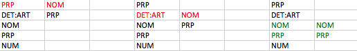

Extraction de patrons syntaxiques (sorties textuelles)
Consigne
Il s'agit, à partir d'un ensemble de suite de catégories lexicales (les patrons en question) de détecter dans les fichiers produits avec Cordial ou TreeTagger les suites de mots correspondantes qui s'y trouvent.
Ces patrons sont formulés à partir des noms des catégories, dépendantes de chaque logiciel, séparés les unes des autres par une tabulation. Ils sont stockés dans un fichier texte où une ligne correspondant à un patron.
Les données sur lesquelles nous travaillons sont des fichiers textes dans lequels une ligne correspond à un terme, pour lequel est fourni la forme trouvées dans le texte, le lemme correspondant et sa catégorie. Ces informations sont séparées par une tabulation et leur ordre dépendant du logiciel (Cordial ou TreeTagger).
| à | PRP | à |
| la | DET:ART | le |
| perpétuité | NOM | perpétuité |
| avec | PRP | avec |
| vingt-deux | NUM | vingt-deux |
| ans | NOM | an |
| de | PRP | de |
| sûreté | NOM | sûreté |
| , | PUN | , |
Algorithme
Conceptuellement, on travaille principalement avec 3 listes : une qui contient le motif "découpé" (un élément du tableau = une catégorie), une qui contient la suite des catégories du fichier qu'on traite, dans leur order d'apparition et finalement une liste qui stocke temporairement des résultats intermédiaire, tel que les mots correspondants au motif partiel. Notez que cette dernière liste n'apparaît pas explicitement dans le pseudo-code.
L'idée est de tester pour chaque suite de catégories (boucle i) présente dans le fichier si elle correspond au motif. Pour cela, on teste si l'élément en cours correspondant au premier élément du motif. Si ce n'est pas le cas, on peut déjà passer à l'élément de donnée suivant, car le motif ne correspond pas.
Dans le cas contraire, on va vérifier si les éléments suivants correspondent également (boucle j). Dès qu'on trouve un contre-exemple, on arrête cette vérification car on sait que le motif ne correspond pas. La clef, est de ne pas incrémenter i lors de la recherche de la suite du motif. Ainsi il n'est pas nécessaire de tenir compte du décalage introduit pour la tester.
Il s'agit donc en quelque chose de faire glisser le motif le long de la suite de catégorie et de voir s'il correspond. L'image ci-dessous représente 3 itérations de la boucle i. Dans la première, on constate à i=0 et j=0 que le motif ne correspond pas (c'est pourquoi j'ai utilisé la couleur rouge). Idem avec i=1 et j=0. En revanche, avec i=1 la catégorie est identique. On incrémente j, qui passe également à 1 afin de tester la suite du motif. Elle matche également. En outre le motif est complètement reconnu, on passe donc à la reconnaissance à partir du mot suivant (PRP), qui n'est pas indiquée sur l'image.
Pseudo-code
// on suppose que 'liste2' contient la catégorie de la ligne considérée
// et que 'motifListe' contient les parties d'un motif
pour i = 0 ; i < length(liste2) ; i++
{
pour j = 0 ; j < length(motifListe) ; j++
{
if liste2[i + j] == listeMotif[j] // ça c'est le cas où tout se déroule comme prévu
{
// on fait quelque chose, comme conserver dans une liste les éléments qu'on veut cf. infra
}
else // si le motif n'est pas celui qu'on veut, il faut quitter la boucle J
{
last; // c'est l'instruction Perl qui s'appelle break partout ailleurs
}
if j == (length(listeMotif) - 1) // quand on arrive à la fin du motif
{
// là on a lu tout le motif,
// on tu peut par exemple imprimer la séquence de mots correspondantes
}
}
}
Implémentation
L'implémentation réelle est un poil plus complexe, puisqu'elle gère plusieurs motifs. Ainsi, l'algorithme précité est lui-même contenu dans une boucle qui itère sur les motifs à rechercher.
Les structures de données changent aussi quelque peu : on utilise un tableau de tableaux pour stocker les motifs ("lignes") sous forme d'une suite de catégories ("colonnes").
Il est également fait usage d'un tableau de tableaux (nommé data) pour stocker les données lues depuis le fichier. Le tableau principal contient les lignes du fichiers, elles-mêmes représentées sous la forme d'un tableau forme / lemme / catégorie, dont l'ordre exacte dépendant du fichier traité.
if(!open(PAT_FILE, "<:encoding(UTF-8)", $patt_file)) { die $! ; } if(!open(DATA_FILE, $filename)) { die $! ; } my @patterns = (); my @data = (); while(<PAT_FILE>) { if (scalar(split(/\s+/, $_)) == 0) { next; } # anti-shit $_ =~ s/\R//; # idem push(@patterns, [split(/\s/, $_)]); # le peuple veut un tableau de tableau } while (<DATA_FILE>) { if ($_ =~ /^\S+\s+\S+\s+\S+$/) # on vérifie que les données sont conformes à nos attentes { $_ =~ s/\R//; push(@data, [split(/\s+/)]); # the creepier, the better } }
Les variables $word_pos et $type_pos contiennent respectivement la position de la forme non lemmatisée et de la catégorie dans le tableau de la ligne de @data courante. Ainsi, le code peut être utilisé à la fois pour Cordial et pour TreeTagger, moyennant l'affectation correcte de ces variables.
# liste contenant, pour chaque motif, les chaînes de caractères correspondantes trouvées my @result = (); # liste temporaire qui contient la suite partielle de catégories syntaxiques # qui correspondent au motif courant my @temp = (); # j'utilise la suite i, k, m pour les boucles plutôt que i, j, k car j ressemble trop à i my ($i, $k, $m, $r); for ($m = 0; $m < scalar(@patterns); $m++, $r = 0) # pour chaque motif { for ($i = 0; $i < scalar(@data); $i++) # pour tous les termes { for ($k = 0; $k < scalar(@{$patterns[$m]}); $k++) # pour les morceaux du motif { if ($data[$i + $k][$type_pos] eq $patterns[$m][$k]) # quand tout se déroule comme prévu { push (@temp, $data[$i + $k][$word_pos]); # on stocke le mot correspondant } else # si le motif n'est pas celui qu'on veut, il faut quitter la boucle k { @temp = (); last; # break } if ($k == (scalar(@{$patterns[$m]}) - 1)) # quand on arrive à la fin du motif { $result[$m][$r++] = join(' ', @temp); @temp = (); } } } }
Enfin, on affiche les résultats : les séquences de mots trouvées pour chaque motif.
for ($i = 0; $i < scalar(@result); $i++) # pour tout les motifs { if (defined(@{$result[$i]})) { print "* Résultat(s) pour le motif @{$patterns[$i]}\n"; foreach (@{$result[$i]}) { print "\t$_\n"; } } else { # n'affiche pas de message pour les motifs sans résultats pour lesquels il n'y a pas un # motif avec résultat plus loin dans le fichier car le tableau est créé dynamiquement # (Perl est exaspérant ...) print "* Aucun résultat pour le motif @{$patterns[$i]}\n"; } }